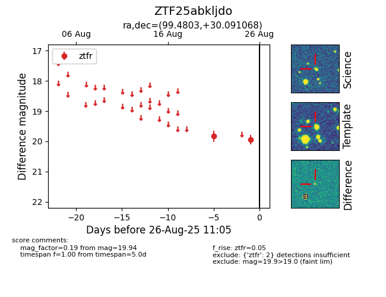

Target ZTF25abkljdo at 2025-08-26 11:05, see:
FINK: fink-portal.org/ZTF25abkljdo
Lasair: lasair-ztf.lsst.ac.uk/objects/ZTF25abkljdo
ALeRCE: alerce.online/object/ZTF25abkljdo
alt names
ZTF25abkljdo (ztf,fink)
coordinates:
equatorial (ra, dec) = (99.4803,+30.09107)
galactic (l, b) = (184.4058,+10.55793)
photometry
last ztfr=19.94
2 ztfr detections
